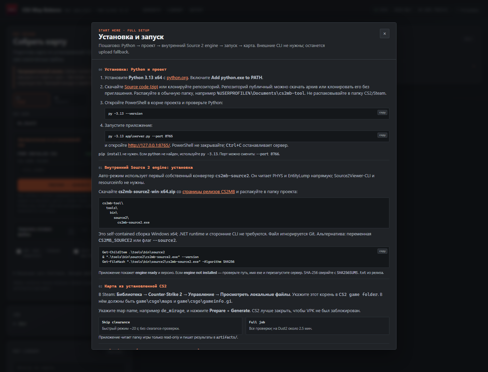

PRODUCT / 02ВОЗМОЖНОСТИ
Разбирай карту по слоям.
Не одна цифра и не красивый вердикт. CS2 Map Balance показывает структуру данных, на которых строится анализ, и помогает добраться до причины различий.
02ВОЗМОЖНОСТИ
Что находится
под капотом.
Pre-alpha v1.0 сфокусирована на измеримых данных карты. Это не симулятор матча и не предсказатель победителя.
⌁Навигационная сеть
Подсчёт nav areas и связей, анализ структуры и построение репрезентативных маршрутов.
Маршруты CT / T
Все spawn → target маршруты, шесть основных сценариев, временные диапазоны и слой All routes.
Геометрия и коллизии
Проверка соответствия пола, wall flags, узких мест и низких потолков.
Сравнение карт
Сводные показатели нескольких карт рядом: areas, edges, collision и время подхода.
Воспроизводимые результаты
Manifest с SHA-256, входными данными и отдельным glTF binary sidecar.
Локальная обработка
Данные остаются на компьютере. Viewer генерируется локально и не требует облачного аккаунта.
!Границы pre-alpha v1.0Пока нет combat-модели, win-rate prediction, detection/encounter timing или полноценной 3D-визуализации. Вердикт баланса основан только на времени маршрутов.
PIPELINE / 03КАК ЭТО УСТРОЕНО
От исходных файлов
к проверяемому результату.
Рабочий процесс разделяет подготовку ресурсов, анализ и просмотр. Файлы не отправляются в облако, а результаты можно сохранить и сравнить позже.
01MAP FILES.nav · entities · physics
02LOCAL ANALYSISgraph · routes · collision
03VIEWER + LIBRARYinspect · compare · validate
DATASET / 03ТЕСТОВАЯ ВЫБОРКА
Данные, а не догадки.
Ниже — фактическая тестовая выборка pre-alpha v1.0: навигационные области, связи, качество сопоставления пола, wall flags и число маршрутов.
03ТЕСТОВАЯ ВЫБОРКА
Проверено на
реальных картах.
В pre-alpha v1.0 проверялись девять карт. Показатель CT/T — эвристика времени маршрута, а не утверждение о соревновательном балансе.
| КАРТА | AREAS | EDGES | FLOOR MATCH | WALL FLAGS | ROUTES | ROUTE-TIME INDICATOR |
|---|
| de_dust2 | 2,242 | 6,275 | 98.77% | 2 / 6,091 | 90 | CT +8.9s |
| de_nuke | 3,040 | 7,676 | 99.27% | 0 / 7,334 | 80 | CT +5.2s |
| de_train | 2,154 | 5,454 | 99.39% | 30 / 5,229 | 56 | CT +10.5s |
| de_vertigo | 2,105 | 5,321 | 99.45% | 4 / 5,131 | 60 | CT +7.0s |
| de_mirage | 2,544 | 6,381 | 99.06% | 4 / 6,069 | 99 | CT +6.4s |
| de_inferno | 2,738 | 7,068 | 99.54% | 2 / 6,922 | 120 | CT +8.0s |
| de_ancient | 1,969 | 5,085 | 98.73% | 0 / 5,009 | 72 | CT +8.5s |
| de_anubis | 2,633 | 6,877 | 97.34% | 2 / 6,750 | 96 | CT +7.3s |
| de_overpass | 3,938 | 10,016 | 97.71% | 0 / 9,859 | 88 | CT +14.0s |
TRUST / 04ПРИВАТНОСТЬ И БЕЗОПАСНОСТЬ
Локально по замыслу.
Прозрачно по коду.
Приложение анализирует файлы карты, а не игровой процесс. Ниже — границы текущей реализации и ссылка на подробный аудит.
04ПРИВАТНОСТЬ И БЕЗОПАСНОСТЬ
Твой компьютер.
Твои файлы.
CS2 Map Balance — локальный анализатор файлов, а не модификация игры. Он не подключается к процессу CS2 и не взаимодействует с матчами или античитом.
Читать полный аудит безопасности ↗
✓Локальная обработка файловYES
✓Чтение памяти игрыNO
✓Инъекции, хуки и оверлеиNO
✓Телеметрия и отправка файловNO
✓Изменение файлов CS2NO
Результат аудита текущего кода. Это не гарантия будущих решений Valve.
Полный аудит безопасности↗
Аудит описывает текущий код. Он не является гарантией будущих решений Valve или заменой осторожного использования сторонних инструментов.
GET STARTED / 05НАЧАТЬ РАБОТУ
Первый viewer — без лишнего.
Подготовь среду, запусти локальный сервер и передай программе данные карты. В основном runtime не требуется устанавливать зависимости через pip.
05НАЧАТЬ РАБОТУ
От установки
до первого viewer.
Pre-alpha v1.0 рассчитана на Windows 10/11 x64. Основной runtime использует стандартную библиотеку Python — pip install не нужен.
01Подготовь среду
Установи Python 3.13 x64 и скачай архив проекта.
02Запусти локальный сервер
В корне проекта выполни команду запуска и открой 127.0.0.1:8765.
03Добавь данные карты
Используй авто-подготовку из CS2 или загрузи nav, entities, glTF и bin.
04Изучи результат
Открой viewer, проверь маршруты и сравни карту с другими генерациями.
СИСТЕМАWindows 10/11 · x64
RUNTIMEPython 3.13 x64
ДОПОЛНИТЕЛЬНОSource2Viewer-CLI 20.1
CS2 MAP BALANCE / PRE-ALPHA v1.0Готов изучить свою карту?
Начни с релиза и подробного руководства по установке.
IN-APP GUIDE / 06Инструкция находится и внутри приложения.
В приложении есть пошаговый onboarding: Python, запуск сервера, Source2Viewer-CLI и подготовка первой карты.
Открыть полное руководство ↗

ОТКРЫТЬ СКРИНШОТ ↗
HELP / 06FAQ
Вопросы, которые важно задать.
О точности оценок, безопасной работе с файлами CS2 и текущих ограничениях alpha.
Это мод или чит для CS2?
Нет. Программа анализирует файлы карты локально и не взаимодействует с игровым процессом, памятью или матчами.
Нужно ли запускать CS2 вместе с программой?
Нет. Для автоматического извлечения рекомендуется закрыть CS2, чтобы VPK не был заблокирован.
Что означает CT +8.9s?
Это time-only эвристика: медианное преимущество CT по нижней оценке времени маршрута к общим целям. Она не учитывает перестрелки, utility, win rate или поведение игроков.
Можно ли считать CT +8.9s доказательством преимущества CT?
Нет. Это только предварительная оценка времени маршрута от спавна к цели. Она не симулирует встречи с противниками, перестрелки, utility и поведение игроков. Проверяй такие гипотезы в реальных матчах.
Обязательно ли устанавливать Source2Viewer-CLI?
Только для автоматического экспорта collision из CS2. В режиме загрузки можно предоставить готовые glTF и .bin.
Где посмотреть исходный код?
В публичном GitHub-репозитории проекта. Там же доступны релизы, документация, тесты и отчёты.